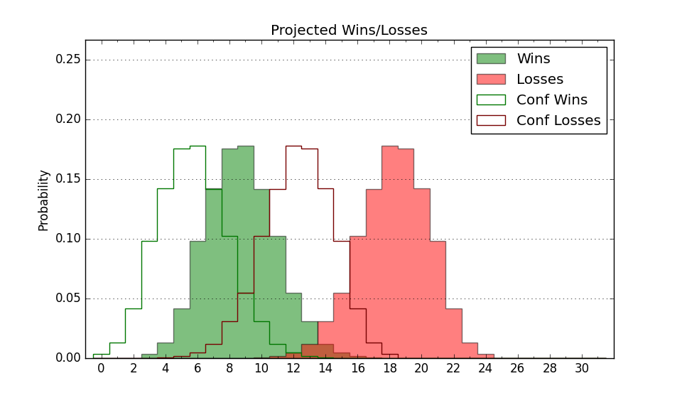

| Home | Game Probabilities | Conferences | Preseason Predictions | Odds Charts | NCAA Tournament |
| City: | Spartanburg, South Carolina | |
| Conference: | Big South (1st)
| |
| Record: | 0-0 (Conf) 3-6 (Overall) | |
| Ratings: | Comp.: -13.8 (320th) Net: -15.1 (319th) Off: 96.5 (264th) Def: 111.6 (334th) SoR: 0.0 (221st) |
| Remaining | ||||||
|---|---|---|---|---|---|---|
| Date | Opponent | Win Prob | Pred. | |||
| 12/29 | Winthrop (218) | 41.0% | L 74-77 | |||
| 12/31 | @ Charleston Southern (326) | 37.6% | L 72-76 | |||
| 1/4 | @ Radford (204) | 15.2% | L 64-76 | |||
| 1/7 | High Point (181) | 35.4% | L 73-77 | |||
| 1/11 | Campbell (221) | 41.3% | L 68-70 | |||
| 1/14 | @ Longwood (134) | 9.5% | L 64-79 | |||
| 1/18 | Presbyterian (327) | 67.7% | W 68-64 | |||
| 1/21 | @ UNC Asheville (195) | 14.9% | L 69-81 | |||
| 1/25 | @ Gardner Webb (165) | 12.2% | L 58-72 | |||
| 1/28 | Radford (204) | 38.0% | L 69-72 | |||
| 2/1 | @ Campbell (221) | 17.1% | L 64-74 | |||
| 2/4 | UNC Asheville (195) | 37.3% | L 73-76 | |||
| 2/8 | Charleston Southern (326) | 67.3% | W 77-72 | |||
| 2/11 | @ Winthrop (218) | 16.9% | L 70-81 | |||
| 2/15 | Longwood (134) | 26.4% | L 68-75 | |||
| 2/18 | @ High Point (181) | 13.9% | L 68-81 | |||
| 2/22 | @ Presbyterian (327) | 38.0% | L 64-68 | |||
| 2/25 | Gardner Webb (165) | 32.1% | L 62-67 | |||
| Previous | Game Score | |||||
| Date | Opponent | Win Prob | Result | Off | Def | Net |
| 11/11 | @Duke (18) | 1.7% | L 38-84 | -28.7 | 9.7 | -19.0 |
| 11/15 | @Clemson (79) | 4.9% | L 70-81 | 17.0 | -5.4 | 11.6 |
| 11/18 | Coastal Carolina (282) | 55.7% | W 79-78 | 12.7 | -13.4 | -0.7 |
| 11/21 | @Air Force (128) | 9.1% | L 56-83 | -5.1 | -12.9 | -18.0 |
| 11/25 | @South Carolina (272) | 25.0% | L 53-68 | -5.9 | -10.7 | -16.6 |
| 12/3 | @Western Carolina (284) | 27.9% | W 79-64 | 14.0 | 20.4 | 34.4 |
| 12/10 | South Carolina St. (350) | 78.3% | W 89-84 | 3.2 | -10.2 | -7.0 |
| 12/13 | @Florida St. (176) | 13.2% | L 63-80 | -7.6 | 1.7 | -5.8 |
| 12/20 | @Kennesaw St. (205) | 15.3% | L 56-65 | -9.5 | 19.2 | 9.7 |
| Stats & Trends | |||||
|---|---|---|---|---|---|
| Current | Day | Week | Month | Season | |
| Composite | -13.8 | -0.1 | +0.0 | +6.3 | -3.0 |
| Comp Rank | 320 | -2 | -1 | +33 | -26 |
| Net Efficiency | -15.1 | -0.1 | +0.1 | +18.5 | -- |
| Net Rank | 319 | -- | -2 | +40 | -- |
| Off Efficiency | 96.5 | -0.2 | -0.0 | +2.5 | -- |
| Off Rank | 264 | -5 | -3 | +16 | -- |
| Def Efficiency | 111.6 | +0.1 | +0.1 | +16.0 | -- |
| Def Rank | 334 | +1 | +3 | +29 | -- |
| SoS Rank | 126 | -1 | +2 | -20 | -- |
| Exp. Wins | 8.7 | -0.0 | +0.0 | +2.7 | -1.1 |
| Exp. Conf Wins | 5.7 | -0.0 | +0.0 | +1.7 | -1.5 |
| Conf Champ Prob | 0.3 | -0.1 | -0.1 | +0.3 | -2.3 |

| Advanced Stats | ||
|---|---|---|
| Stat | Value | Rank |
| Off Eff FG % | 0.475 | 270 |
| Off Ast Ratio | 0.118 | 324 |
| Off ORB% | 0.248 | 233 |
| Off TO Rate | 0.166 | 210 |
| Off FT Ratio | 0.334 | 125 |
| Def Eff FG % | 0.536 | 288 |
| Def Ast Ratio | 0.134 | 133 |
| Def ORB% | 0.408 | 363 |
| Def TO Rate | 0.164 | 152 |
| Def FT Ratio | 0.352 | 279 |